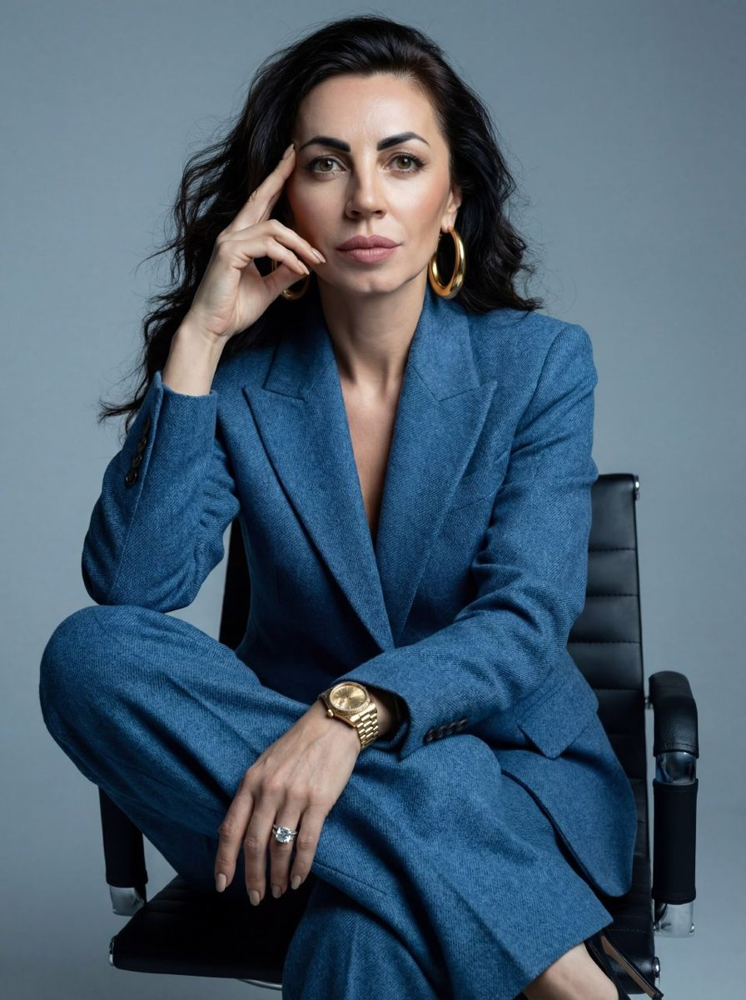

Продвижение и продажи для Киры Разумовской. Предложение от Екатерины Корягиной.

Для Киры Владимировны. 26 лет в юридической практике, 15 лет международной экспертизы, своя юридическая компания и бутик недвижимости «Красотки на миллиард». «Со мной все всегда возможно!» В этой фразе уже есть бренд, и его пора показать тем, кто принимает решения о больших деньгах.
практики и география проектов от Монако до Японии
стоят 4 НПЗ из одного Вашего поста, рядом лот за 169,7 млн ₽
подписчиков в двух Telegram-каналах вместе: 58 и 19, данные на 30 октября
просмотров у последних постов в каналах
Посты выходят, и их мало кто видит. Каналы говорят языком новостей и лотов, а образ «Красотка в законе» и Ваш живой характер остаются в названии. Люди с крупным вопросом выбирают того, кого уже знают и кому доверяют, поэтому начинать стоит с узнаваемости.
Сильная компания, бутик недвижимости, сеть партнёров. Две отдельные линии, два канала, посты на двух языках в одном потоке. Маршрута от поста до заявки пока нет.
Единый образ, регулярные рилсы с Вашим лицом, бот с заявками по трём входам. Съёмка занимает 1-2 часа в неделю. К Вам приходят люди, которые уже знают, кто Вы.
«Красотка в законе» становится именем, которое рекомендуют для сделок и сложных вопросов. Заявки идут Вашей команде, а Вы выбираете самые интересные дела.
Цифры для точек B и C поставим вместе на первой встрече: текущее число заявок, средний чек и сколько новых дел команда готова взять.
Совместная работа и готовая инфраструктура вокруг Вас. Без лекций и домашних заданий.
Цель: один сильный образ, из которого понятны и право, и недвижимость.
Цель: большой масштаб проявленности ощущается телом как спокойный и свой.
Цель: блог растёт, а у Вас он забирает 1-2 часа в неделю.
Цель: зритель становится заявкой, а заявка попадает к Вашей команде с готовым контекстом.
Цель: доверие приходит к Вам вместе с теми, кому аудитория уже верит.
Считаем на Вашем лоте с Фрунзенской набережной, 169 740 000 ₽. Подставьте свою ставку вознаграждения:
| Вознаграждение со сделки | Что это даёт | Сумма |
|---|---|---|
| 0,41% | Пакет полностью окупается | 700 000 ₽ |
| 1% | Окупаемость в 2,4 раза | 1 697 400 ₽ |
| 2% | Окупаемость в 4,8 раза | 3 394 800 ₽ |
| 3% | Окупаемость в 7,3 раза | 5 092 200 ₽ |
Это расчёт, сделку он не обещает. Ставки условные, реальные цифры подставим по Вашим договорам. Рекламный бюджет считаем отдельно.
ЭЛЬЛИ работает в Telegram по закрытому протоколу метода Резонанса. Она находит установку, снимает телесный зажим и возвращает силы и ясное действие.
Доступ на всё время сопровождения.